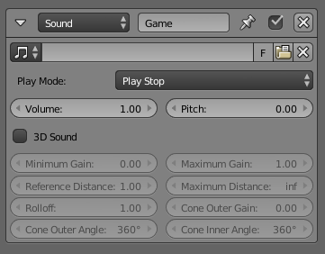

Sound Actuator¶
The Sound Actuator allows the user to play sound files in the game engine.

{kind=link}
Sound Actuator.
Tính Chất -- Properties¶
- Sound File
- Load a new sound file or select one from the list.
- Chế Độ Chơi -- Play Mode
How the sound effect is played.
- Ngừng Chơi -- Play Stop
- The sound effect is played when activated. Stops instantly when deactivated.
- Chơi đến Hết -- Play End
- The sound effect is played when activated. When deactivated, stops after finishing playing the sound. The sound is not replayed if activated while still playing.
- Ngừng Vòng Tuần Hoàn -- Loop Stop
- The sound is played as infinite loop when activated. Stops instantly when deactivated.
- Cuối Vòng Tuần Hoàn -- Loop End
- The sound is played as infinite loop when activated. When deactivated, stops after finishing playing the sound.
- Vòng Tuần Hoàn Hai Chiều -- Loop Bidirectional
- The sound is played as infinite ping-pong loop. When deactivated, stops after finishing playing the sound.
- Ngừng Vòng Tuần Hoàn Hai Chiều -- Loop Bidirectional Stop
- The sound is played as infinite ping-pong loop. Stops instantly when deactivated.
- Âm Lượng -- Volume
- The volume at which the sound effect is played.
- Cao Độ -- Pitch
- The pitch at which the sound effect is played. 0 is default, 12 is one octave.
Âm Thanh 3D -- 3D Sound¶

The cones point in the direction of the objects negative Z axis.
If enabled, the sound is affected by distance, speed of the emitting object and various other things. The options below are only available if 3d Sound is enabled.
Ghi chú
3D sound is influenced by the Audio panel in Scene Settings. A brief description of the different distance models can be found here.
- Mức Tăng Nhỏ Nhất -- Minimum Gain
- The minimum gain of the sound, no matter how far it is away.
- Mức Tăng Lớn Nhất -- Maximum Gain
- The maximum gain of the sound, no matter how near it is.
- Khoảng Cách Tham Chiếu -- Reference Distance
- The cones point in the direction of the objects negative Z axis. The distance at which the sound has a gain of 1.0.
- Khoảng Cách Tối Đa -- Maximum Distance
- The maximum distance at which the sound can be heard.
- Tắt Dần -- Rolloff
- The influence factor on volume depending on distance. The higher, the more the sound will fade with distance.
- Mức Tăng Ngoại -- Cone Outer Gain
- The gain outside the outer cone. The gain inside the outer cone will be interpolated between this value and the normal gain inside the inner cone (Volume). Note that the cones always point in the direction of the objects local -Z axis (figure right).
- Góc Nón Ngoại -- Cone Outer Angle
- The angle of the outer cone.
- Góc Nón Nội -- Cone Inner Angle
- The angle of the inner cone.